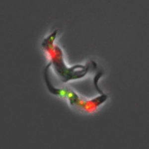

Now fulfilled - Postdoc position available
3 min

In eukaryotes, protein kinases and kinase enzyme complexes create protein phosphorylations. These reversible regulatory modifications are essential to control autophagy and promote cell survival and differentiation. Autophagy (from greek “auto” self and “phagos” eating) is an essential process by which cells target cellular components or pathogens to the lysosome for degradation and recycling. Autophagy machinery is also shared with the unconventional secretory pathway, called lysosome exocytosis, that is a fundamental mechanism for the release of proteins that lysosomes could not degrade, thus avoiding potential toxic effect for the cell. Additionally, lysosome exocytosis has been implicated in the breach of basement matrix to allow tissue invasion through the release of peptidases.
Kinetoplastids are exquisitely sensitive to their environment and require autophagy to adapt to drastic changes during host transitions. Our laboratory uses T. brucei as an excellent tractable model to explore the diversity of eukaryotic signalling networks and to investigate the regulatory mechanisms of autophagy-related pathways and their role for the parasite life-cycle and virulence.
Notably, T. brucei lacks or is independent from essential protein kinase complexes regulating autophagy in classical eukaryotic models. Therefore, studying how protein kinases regulate autophagy and lysosome exocytosis by phosphorylation events is essential to understand how insect-transmitted parasites invade and survive in both mammalian hosts, including humans, and insect-vectors.
The release of peptidases to the extracellular environment is an essential process by which T. brucei is able to sense its population density within the mammalian bloodstream. Indeed, the peptidases digest host proteins and generate oligopeptides that are in turn sensed by the parasites to initiate a quorum-sensing dependent differentiation. This differentiation is not only essential for the progression to the next life stage but also prolongs the survival of the host, both facilitating transmission. However, the mechanisms involved in the release of the peptidases to generate the quorum sensing response remains unknown. An attractive potential pathway for the release of these peptidases, and therefore to enable quorum-sensing and tissue invasion, is the lysosome exocytosis pathway.
African trypanosomiasis is characterised by initial waves of parasitaemia in the bloodstream, followed by invasion of the central nervous system. Recent studies highlighted the importance of tissues and organs as a potential reservoir and protective environment for the creation of the characteristic waves of parasitaemia, drug resistance and parasite transmission. However, little is known about the dynamic flux between tissues, their roles for the bloodstream re-invasion and their influence on the parasites’ life cycle. With this question, we want to understand how peptidase secretion through autophagy-related pathways enable host tissue invasion by T. brucei. This research will provide an understanding of the parasite’s life cycle and disease progression where compartments may play a role.
These researches will not only provide a better understanding of how kinetoplastid parasites adapt to the different hosts encountered during their complex lifecycles and persist in vivo, but will lay the foundations for the use of T. brucei as model to study the regulation of, and crosstalk between, the autophagy and exocytosis pathways.